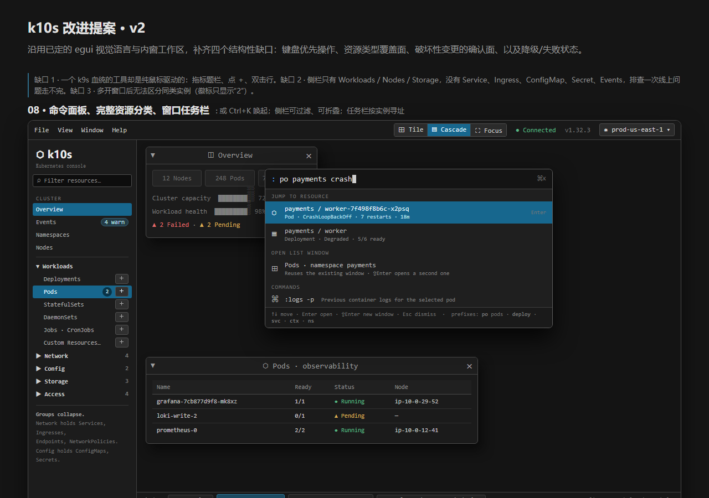

Design 08: improvements
The editable mockup was never committed. This checked-in export is the authoritative replacement and is presented without reinterpretation.

The editable mockup was never committed. This checked-in export is the authoritative replacement and is presented without reinterpretation.
